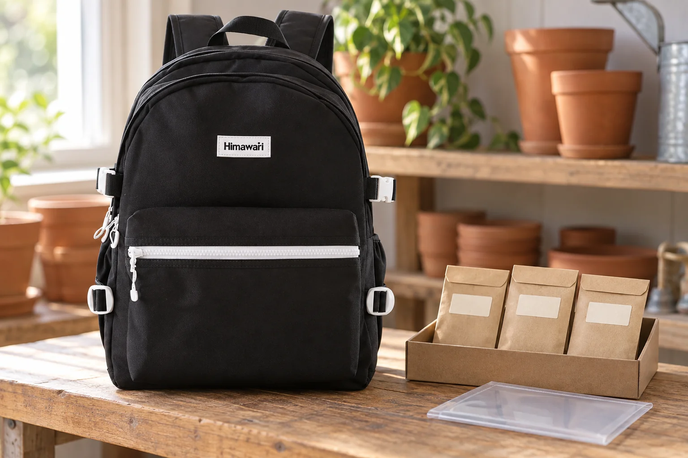

씨앗 나눔 가는 날의 백팩: 봉투의 이름도 함께 가져가기

동네 씨앗 나눔 모임에 가져갈 봉투를 고릅니다. 부피가 작아 빈 파우치에 한꺼번에 옮겨 담을 수 있지만, 원래 봉투의 이름과 날짜가 빠지면 나중에 무엇을 받았는지 알기 어려워집니다. 씨앗만 챙기지 말고 함께 따라가야 할 정보를 먼저 살펴보세요.
원래 봉투에 있는 정보를 남깁니다
구입한 씨앗은 품종명과 보관·파종 안내가 적힌 원래 봉투를 함께 가져가는 편이 확인에 도움이 됩니다. 포장을 옮겨야 한다면 본인이 확인한 이름과 날짜를 새 봉투에도 옮겨 적습니다. 모르는 품종이나 날짜를 짐작해 채우지는 마세요. 나눔 모임에서 요구하는 표시나 수량이 있다면 그 안내도 미리 확인합니다.
여러 봉투를 한데 비우지 않습니다
비슷하게 생긴 씨앗이라도 각 봉투는 따로 둡니다. 봉투를 열어 수량을 나누었다면 이름표와 씨앗이 같은 묶음에 남았는지 확인하세요. 테이블에서 한 번에 여러 봉투를 펼치기보다 하나씩 준비하면 구분하기 수월합니다. 봉투 입구가 제대로 닫혔는지도 보고, 작은 종이 상자나 파일에 세워 담아 다른 소지품 사이에서 꺼내기 쉽게 정리합니다.
이동용 백팩과 보관 조건을 구분합니다
씨앗 봉투가 물병이나 젖은 소품과 직접 맞닿지 않게 이동 묶음을 나눠보세요. RHS의 씨앗 보관 안내는 마른 씨앗에 이름을 적은 종이 봉투를 사용하되, 종류에 따라 바로 파종해야 하는 경우도 있다고 설명합니다. 모든 씨앗에 같은 보관법을 적용하기보다 봉투나 공급처의 안내를 따릅니다. 가방과 사진 속 서류 슬리브를 씨앗의 장기 보관 용기로 판단하지는 마세요.
건넬 때 봉투의 표시를 함께 확인합니다
모임에서 씨앗을 건넬 때 상대가 이름과 날짜를 읽을 수 있는지 확인하세요. 남은 봉투는 귀가 후 바로 꺼내 각각의 안내에 맞는 장소로 옮깁니다. 사진의 No.9290은 가로 30 × 세로 42 × 폭 18cm이며 검정 몸체와 흰색 지퍼·부자재 배색을 원본에 맞춰 표현했습니다. 봉투를 가방 안에 넣어 시험한 사진이 아니므로 특정 상자의 수납이나 방습 성능을 보장하지 않습니다.
참고·안내
- Himawari No.9290 제품 정보
- 실제 Himawari No.9290 블랙 원본을 참조한 AI 연출 사진입니다. 씨앗 봉투와 서류 슬리브는 별도 소품이며 사진의 표시는 재배 안내가 아닙니다.
자주 묻는 질문
품종을 모르는 씨앗은 이름을 추측해 적어도 되나요?
확인되지 않은 이름을 적지 말고 모른다는 사실을 표시하세요. 모임의 나눔 기준과 공급처 정보를 먼저 확인합니다.
백팩에 담아두면 씨앗 보관도 가능한가요?
백팩은 이동에 사용하는 가방입니다. 귀가 후 씨앗 종류와 공급처가 안내한 보관 조건을 따로 확인하세요.